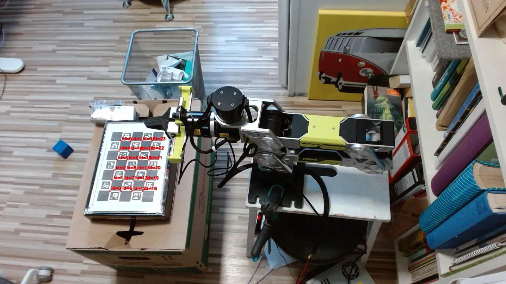
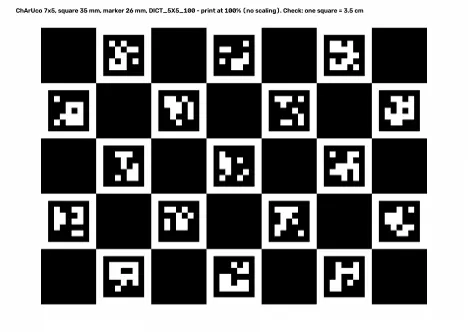
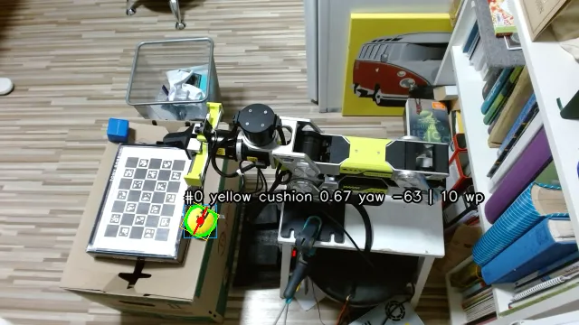

Day 3 · Saturday, November 21, 2026
Moving to the robot laptop and a change of plan for calibration
New laptop, app 3.8, YOLO-World – and a manual calibration that fails and leads us to ChArUco.

As of today the project has a dedicated robot laptop (MacBook Pro M1, 8 GB). The Mac mini stays in the office. This entry grew over the day.
🛠What we did
- Transferred the project folder from the Mac mini to the laptop, PCAN driver in the user directory (no admin rights on the laptop).
- App 3.7 (guard v3.3): no more false "blocked" freezes when lifting overhead, the gripper opens fully again,
safe_zerois controlled instead of blind, cameras are selected by name instead of index. - App 3.8: session recording with live markers (✓ / ✗ / retry / discard), labels per episode, export of successful episodes only, shared cameras via shared memory, and saving in about 2 s instead of 13–17 s.
- YOLO-World (open vocabulary): about 34 ms per frame on the Apple GPU (MPS) versus about 224 ms on the CPU.
- Camera calibration: intrinsics with 0.81 px reprojection error, table homography with 0.60 px.
💭Mindset
The robot should grasp objects by text command ("take the Nivea tin, put it in the trash"). For that we need object detection and the chain camera → table → robot.
Our guideline: adopt best practices, don't reinvent anything – YOLO-World, OpenCV calibration, LeRobot standard tools. And: calibration must be quick to repeat, because board and camera never stand exactly the same.
🏆Wins
- Object detection is fast enough for real time (about 30 fps).
- ChArUco board detected: 24 of 24 corners, 17 markers.
- Recording workflow with markers built and made much faster.
- Guard v3.3 replayed against all freezes logged so far – but not yet checked on the real hardware.

💥Fails
- Recording did not work at first: the
datasetspackage (extralerobot[dataset]) was missing. - Camera indices jump after plugging and unplugging, at least twice today. Cameras also dropped out on the shared USB 2.0 hub (probably overload).
- The manual corner calibration failed: the board slipped, the corner order on the checkerboard was ambiguous, and the arm and cables hid the board. Only corners A and B could be read, C and D could not – no usable robot-table calibration.
- Calibration capture and recorder wanted the same telemetry interface.
- The laptop demanded an approval card for every command, which slowed us noticeably.
📌Learnings
- Touching corners manually is error-prone and costs time – hand-eye calibration should be automated (OpenCV
calibrateHandEye). - ChArUco is more robust than a plain checkerboard: unambiguous corners, even when partially occluded.
- Short captures with similar views (ours lasted only about 35 s) give weak intrinsics – we will repeat them with varied poses.
- Select cameras by device name, don't overload the USB hub, check all Python extras before recording.
Next step: the arm moves through 15–20 poses above the board (ChArUco 7×5, 35 mm squares) and calibrates itself; a button starts it only after confirmation. So far this is only planned.

🔗Sources
Seeed reBot B601-RS plugin/URDF, LeRobot (Hugging Face), OpenCV (calibration, ArUco/ChArUco, calibrateHandEye), Ultralytics YOLO-World, ROS practice for hand-eye calibration (MoveIt, easy_handeye) as a reference. We did not log individual links.
•Evening session (approx. 21:00–00:20, about 3.5 h)
The calibration run from the afternoon finally got going – and immediately showed us how fragile the setup is.
- Board re-measured: the print came out at 94 %, so the squares are 33 mm and the markers 24.51 mm, not 35 mm. Calibration needs the real numbers.
- Hand-eye fix (v3.9.1): a 1° per-step clamp starved the elbow of torque and ended in a lag crash. The trajectory now tracks the real joint position (clamp 4°). Auto-start: the arm goes to a search pose 260 mm above the board, detects it, centres, and only continues when two estimates agree within 25 mm.
- Quick follow-ups: v3.9.2 resumes partial runs (10+ samples), v3.9.3 brings a stronger motor profile (8°/s near the board), v3.9.4 adds passive drop diagnostics (per-motor trace, USB/camera monitor, drop report with verdicts). v3.9.5 is in progress: no freeze on camera loss, and a soft stop button that returns the arm to rest instead of dropping it.
- Measurement: run 20261121_231523 – 13 samples, 2.0 px reprojection error, 2.3 mm board spread. Graded OK, but not applied. A later run graded POOR; the camera mount was probably knocked about 16° in the fall.
Wins: smooth motion through 13 poses, twice. Auto-start works. And a first dry run of live grasp detection (YOLO-World + MobileSAM) found a yellow smiley cushion at 0.67 confidence, judged it reachable and planned 10 waypoints – without moving the arm.

Fails: the arm dropped twice at pose 14 (CAN reconnect failed, motor feedback frozen). Suspects: wrist cable or plug, power, or USB – the CAN adapter, leader arm and both cameras share one USB 2.0 hub, three levels deep. One run froze for 36 s when the wrist camera stalled, and the CAN adapter got stuck after hard stops and needed a replug.
Learnings: a too-tight motion clamp means torque starvation. A hard motors-off stop drops the arm, so a soft stop is needed. Never block the control loop on camera frames. USB hub chains are fragile (a powered hub helped).
Inspiration: bowenszhu/rebot-il-vla-benchmark (50 demos: SmolVLA 13/15, ACT 9/15) and Kamil Buczynski's LLM agent robotics project: the LLM only sequences actions through a small HTTP API, while safety is decided by plain Python rules. Our plan after calibration: a robot API around vision and grasping, plus a human approval gate.
</>Code status
Teleop app 3.8 runs on the laptop, detection runs, recording is newly built but not yet used with the real arm. The three real-arm tests of 3.7 (lift overhead, open the gripper fully, stop from overhead) are still pending.
Latest commit on main: v3.9.4 – passive drop diagnostics; v3.9.5 in progress.
Not published yet Code will be published once approved.